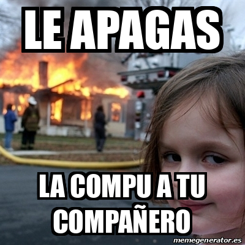

El cocid empezo en el 2019 y a echo que muchas personas
pierdan a queridos y a complicado tod mucho
en el 2019 en wuhan china un nuevo virus aparecio. muchos no pensaron
mucho de esto pero se estab exparsiendo muy rapido. despues de algunos
meses muchas personas no solo en china pero en todo el mundo ya estaban
conagiadas
Mateo Dunhe
05/11/21
Tipos de Perros
foto de virus
quienes fueron los grupos con mayor riesgo de covid.
El nuevo coronavirus de Wuhan fue notificado oficialmente por primera vez el pasado 31 de diciembre de 2019.
Fue en ese momento cuando la Comisión Municipal de Salud y Sanidad de Wuhan (provincia de Hubei, China)
informó a la Organización Mundial de la Salud (OMS) sobre un grupo de 27 casos de neumonía de etiología
desconocida, con una exposición común a un mercado mayorista de marisco, pescado y animales vivos en la
ciudad de Wuhan, incluyendo siete casos graves.
https://definicion.de/arte/
esa fue una de las pistas que esto iva a ser un problema,
Según recoge la OMS en sus informes de procedencia del coronavirus de Wuhan, el agente causante de esta
neumonía fue identificado como un nuevo virus de la familia Coronaviridae que posteriormente se ha denominado
SARS-CoV-2. El cuadro clínico asociado a este virus se ha denominado Covid-19.Desde el inicio de la epidemia
se han detectado más de 59 millones casos en todo el mundo, y más de 1,4 millones de muertos, según los datos
recopilados por la Universidad Johns Hopkins. Unas cifras que varían día tras día aumentando en millares.
A día de hoy, la evolución de los acontecimientos y el esfuerzo conjunto la comunidad científica mundial,
han generado gran cantidad de información que se irá modificando en función de las nuevas evidencias, llegando
al punto, casi un año después de la primera notificación oficial del coronavirus, de que las primeras vacunas
ya estén listas para su aplicación.
como se transmite el coronavirus
Los expertos identifican dos formas de transmisión.
Transmisión animal-humano: El modo en el que pudo transmitirse el virus de la fuente animal a los primeros
casos humanos es desconocido. Todo apunta al contacto directo con los animales infectados o sus secreciones.
En estudios realizados en modelos animales con otros coronavirus se ha observado tropismo por las células de
diferentes órganos y sistemas produciendo principalmente cuadros respiratorios y gastrointestinales, lo que
podría indicar que la transmisión del animal a humanos pudiera ser a través de secreciones respiratorias y/o
material procedente del aparato digestivo.
https://concepto.de/teoria-del-color/
Transmisión humano-humano: La vía de transmisión entre humanos se considera similar al descrito para otros coronavirus
a través de las secreciones de personas infectadas, principalmente por contacto directo con gotas respiratorias de más
de 5 micras (capaces de transmitirse a distancias de hasta 2 metros) y las manos o los fómites contaminados con estas
secreciones seguido del contacto con la mucosa de la boca, nariz u ojos. El SARS-CoV-2 se ha detectado en secreciones
nasofaríngea, incluyendo la saliva. Actualmente se desconoce el tiempo de supervivencia de SARS-CoV-2 en el medio
ambiente. Los coronavirus humanos pueden permanecer activos en superficies inanimadas hasta 9 días, sin embargo,
a temperaturas ≥30ºC la supervivencia es más corta. Otra de las polémicas sobre su transmisión surgió sobre la posibilidad
de que fuera contagioso mediante a transmisión aérea o por aerosoles (capaz de transmitirse a una distancia de más de 2 metros)
. Las últimas investigaciones apuntan a que el Covid-19 puede ser transmitido por aerosoles.
Mi opinion general sobre el covid 19.
https://concepto.de/teoria-del-color/
las persones deberiamos de cuidarnos mucho con este virus este es muy peligroso
las persones deberiamos de cuidarnos mucho con este virus este es muy peligroso
hay muchas formas de lograra que todos estemso a salvo de este virus y ademas todos debereiamso de seguier esta normas nuevas
por ejemplo, mantener al susana distancia, usar el cbrebocas a todo momento y ponerse la vacuna. todas estas normas nuevas no
estan aqui para darnos lata si no para mantenernos asalvo y cuidarnos.
la vacuna tambien es algo muy importante en este tema auna asi que es relativakmente nuevo y que su produccoion fue muy rapida se
ve que si sirve para parar el coivid 19 de una manera buena.tambnien tenemos que entender que la vacuna no esta aqui para matarnos
o mertnos chips en la cabeza si no para darnos un alivio contar este problema. en mi opinion la vacuna es la mejor forma de eradicar
el covid 19
Muchas Gracias por visitarnos, ojala te volvamos a ver aqui, tenemos de todo
este video tiene algunas cosas importantes que deberias saber sobre el covid 19
 meme covid
17/02/22
meme de covid
aun asi que el covid a sido una de las cosas que hizo nuestra vida miserable por algunos 2 anos se sigue
podiendo hacer algunos chistes de las cosas que vemos de dia a dia

 cubre bocas
cubre bocas  Tipos de Perros
Tipos de Perros